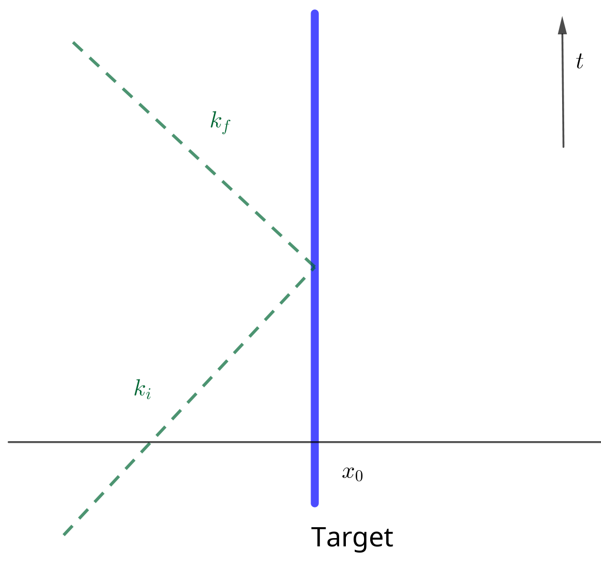

Information
- 官方介绍: https://theoreticalminimum.com/courses/particle-physics-1-basic-concepts/2009/fall
- 视频列表地址: https://www.youtube.com/watch?v
2eFvVzNF24g&listPLaTmJYdn8i5zI1To7uSg75eNA_AKXGUl0 - 把主要内容整理一下.
Lecture 1: Particles and Light
Wave Properties
$$\begin{align} \boxed{\frac{\lambda}{T} = c} \end{align}$$ $$\begin{align} f = \frac{1}{T} \quad \boxed{\lambda f = c} \end{align}$$ $$\begin{align} \omega = 2\pi f = \boxed{2\pi \frac{c}{\lambda} = \omega} \end{align}$$Photon Properties
$$\begin{align} \boxed{E_{\mathrm{phton}} = \hbar\omega} \end{align}$$ $$\begin{align} E_{\mathrm{ray}} = n \hbar \omega \end{align}$$ $$\begin{align} p = \frac{E}{c} \end{align}$$Lecture 2: Review of Quantum Mechanics & Harmonic Oscillator
Periodic Boundary Condition
In order to make momentum conseved, we need periodic boundary condition, so
$$\begin{align} \lambda = \frac{L}{N} \end{align}$$$\lambda$ is discrete.
$$\begin{align} p = \frac{h}{\lambda} = \frac{h}{L}N \end{align}$$Harmonic Oscillator
$$\begin{align} E &= n \hbar\omega\\ a^{+ }|n \rangle &= \sqrt{n + 1} | n+ 1 \rangle \\ a^{- }|n \rangle &= \sqrt{n } | n - 1\rangle \\ a^{+ }a^{- } &\sim n \\ a^{- }a^{+ } &\sim n + 1 \end{align}$$Lecture 3: Field Operators
Field operator
In periodic boundary conditions, a plane wave
$$\begin{align} e^{\mathrm{i}kL}, \quad, k = n\frac{2\pi}{L} \end{align}$$One particle with momentum $k_7$
$$\begin{align} |0, 0, 0, 0, 0, 0, 1, 0, 0, \cdots \rangle \end{align}$$Classical version of Fourier coefficient of field
$$\begin{align} \psi(x) &= \sum_k \alpha(k) e^{\mathrm{i} kx} \\ \psi^{ * }(x) = \sum_k \alpha^{ * }(k) e^{- \mathrm{i}k x} \end{align}$$quantum version
$$\begin{align} \psi^{ -}(x) &= \sum_k \alpha^{- }(k) e^{\mathrm{i} kx} \\ \psi^{ + }(x) &= \sum_k \alpha^{ + }(k) e^{- \mathrm{i}k x} \end{align}$$Let
$$\begin{align} |0\rangle \equiv& |0, 0, 0, 0, 0, 0\cdots \rangle\\ |k_i\rangle \equiv& |0, 0, 0, \cdots , 1, 0, 0\cdots \rangle , \quad\mathrm{one} \quad \mathrm{in}\quad i \mathrm{th} \end{align}$$Create a particle at position $x$
$$\begin{align} \psi^{+ }(x) |0\rangle = \sum_k e^{-\mathrm{i} k x} a^{+ }(k)| 0 \rangle = \sum_k e^{-\mathrm{i} k x} | k \rangle \end{align}$$Possible Reaction & Stimulated Emission

A particle comes in, and when it hits the target. The target happens to be localized at position $x$ . That particle disappears. And then two particles emitted from the same spot. How would we describe this reaction?
$$\begin{align} \Psi^{\dagger}(x) \Psi^{\dagger}(x) \Psi(x)|\rangle \end{align}$$If that a particle with momentum $k_i$ is absorbed at position $x$ . What is the final state? What is the various probabilities for this final state to have this or that momentum?
A photon comes in, hits an atom localized at a point and from that point two photons go off
$$\begin{align} \Psi^{\dagger}(x) \Psi^{\dagger}(x) \Psi(x)|k_{\mathrm{i}}\rangle =& \sum_{l,m} a^{\dagger}(l) e^{-\mathrm{i}lx} a^{\dagger}(m) e^{-\mathrm{i}mx} \sum_k a(k) e^{\mathrm{i}kx} |k_{\mathrm{i}}\rangle \\ =& \sum_{l,m} a^{\dagger}(l) e^{-\mathrm{i}lx} a^{\dagger}(m) e^{-\mathrm{i}mx} e^{\mathrm{i}k_{\mathrm{i}}x} |0\rangle \\ =& \sum_{l,m} e^{\mathrm{i}(k_{\mathrm{i}} - l - m)}|l, m\rangle \end{align}$$本来想用这个说明 stimulated emission, 因为 $l = m$ 时会有 factor $\sqrt{2}$ , 产生相同动量的两个粒子的概率会增加. 但是翻车了, 因为 $l \neq m$ 时, 同样也会有一个 $2$ , 因为 $l = 1, m = 2$ 和 $l = 2, m = 1$ 都会有贡献.
然后用另一个例子说明 stimulated emission. Supposing we have a particle which can decay and emit a photon.
$$\begin{align} \Psi^{\dagger}(x) |0\rangle = \sum_k e^{-\mathrm{i} kx}|k\rangle \end{align}$$equal probability for all $k$ .
If there pre-exist a particle
$$\begin{align} \Psi^{\dagger}(x) |l\rangle = \sum_k e^{-\mathrm{i} kx} a^+(k)|l\rangle \end{align}$$if $k\neq l$
$$\begin{align} \Psi^{\dagger}(x) |l\rangle = \sum_k e^{-\mathrm{i} kx} |k, l\rangle \end{align}$$equal probability. But if $k = l$
$$\begin{align} e^{-\mathrm{i} kx} \sqrt{2}|k, k\rangle \end{align}$$There are no photons present then just decays with coefficient $1$ , that's spontaneous emission. The presence of particles of a give type will increase the probability that out decay takes places with the final momentum being the same as the momentum already there. This is stimulated emission. Bosons!
Density of $x$
$$\begin{align} \Psi^{\dagger}(x) \Psi(x) \end{align}$$ $$\begin{align} \frac{1}{L}\int \Psi^{\dagger}(x) \Psi(x) \cdot\mathrm{d}x = \frac{1}{L} = \mathrm{Number} \quad \mathrm{of} \quad \mathrm{particles} \end{align}$$Lecture 4: Scattering Process
Simplest Quantum Field
The simplest quantum field, be a function of only one coordinate namely $x$ .
$$\begin{align} \Psi (x, t) =& \sum_k a^-(k) e^{\mathrm{i}kx} e^{\mathrm{i}\omega(k)t} \quad \mathrm{(Definition)} \\ \Psi^{\dagger} (x, t) =& \sum_k a^-(k) e^{-\mathrm{i}kx} e^{\mathrm{i}\omega(k)t} \end{align}$$Find the wave equation for $\Psi$ .
$$\begin{align} \frac{\partial}{\partial t} \Psi &= \mathrm{i} \omega(k) \Psi \\ \frac{\partial}{\partial x} \Psi &= \mathrm{i} k \Psi \\ \frac{\partial^2}{\partial x^2} \Psi &= - k^2 \Psi \\ \end{align}$$so
$$\begin{align} \mathrm{i}\frac{\partial}{\partial t} \Psi = \frac{\omega}{k}\frac{\partial^2}{\partial x^2} \Psi \end{align}$$if $\omega = \frac{k^2}{2m}$ , a non-relativitic particle
$$\begin{align} \mathrm{i}\frac{\partial}{\partial t} \Psi = \frac{1}{2m}\frac{\partial^2}{\partial x^2} \Psi \end{align}$$$\Psi$ is an operator.
A Model: Scattering

A particle absorbed by a fixed target and emitted by the target instantly. This process is energy conserved but momentum not conserved. Averaging or integrating over all possiable time (set $x_0 = 0$)
$$\begin{align} \langle k_f | g \int \mathrm{d}t\cdot \Psi^{\dagger}(0, t) \Psi(0, t) | k_i \rangle = 2 \pi g \delta (\omega_f - \omega_i) \end{align}$$where $g$ is coupling constant. There is connection between the fact that conservation of eneryg and the fact there's no preference of any specified time.
Lecture 5: Fermion
Phase Velocity & Group Velocity
$$\begin{align} \omega = \sqrt{k^2 + m^2} \end{align}$$for massless $m = 0$
$$\begin{align} v_{\mathrm{p}} &= \frac{\omega}{k} = 1 \\ v_{\mathrm{g}} &= \frac{\mathrm{d}\omega}{\mathrm{d}k} = 1 \end{align}$$but if $m \neq 0$
$$\begin{align} v_{\mathrm{p}} &= \frac{\omega}{k} = \sqrt{1 + \frac{m^2}{k^2}} > 1\\ v_{\mathrm{g}} &= \frac{\mathrm{d}\omega}{\mathrm{d}k} = \sqrt{\frac{k^2}{k^2 + m^2}} < 1 \end{align}$$$1$ is the speed of light. So phase velocity carries nothing.
Fermion
$$\begin{align} c^{+ } |0 \rangle &= |1\rangle\\ c^{+ } |1 \rangle &= 0\\ c^{- } |0 \rangle &= 0\\ c^{0 } |1 \rangle &= |0\rangle\\ \end{align}$$ $$\begin{align} \boxed{c^{+ } c^{ -} |0 \rangle = 0 } \\ \boxed{c^{- } c^{ +} |0 \rangle = |0\rangle } \end{align}$$Ground state
Boson: Bose condensate.
Fermion: Fermi sphere
Dirac Equation
move speed of light( $\omega = k$ , $c = 1$ ), carry electric charge, only move to one direction filed $\Psi$
$$\begin{align} \Psi = e^{\mathrm{i}(k x - \omega t)} = e^{\mathrm{i} k (x - t)} \end{align}$$so
$$\begin{align} \frac{\partial \Psi}{\partial t} = - \frac{\partial \Psi}{\partial x}, \quad (\mathrm{i}\omega = \mathrm{i}k) \end{align}$$describe both positive and negative energy. Negative is filled.
Lecture 6: Dirac Equation & Higgs Boson
Move right field
$$\begin{align} \frac{\partial \Psi}{\partial t} = - \frac{\partial \Psi}{\partial x} \end{align}$$Move left field
$$\begin{align} \frac{\partial \Psi}{\partial t} = \frac{\partial \Psi}{\partial x} ,\quad (\omega = -k) \end{align}$$ $$\begin{align} \dot{\Psi} \equiv \begin{pmatrix} \dot{\Psi}_R \\ \dot{\Psi}_L \end{pmatrix} = - \begin{pmatrix} 1 &0 \\0 & -1 \end{pmatrix} \begin{pmatrix} \frac{\partial \Psi_R}{\partial x} \\\frac{\partial \Psi_L}{\partial x} \end{pmatrix} \equiv - \alpha \frac{\partial}{\partial x} \Psi \end{align}$$ $$\begin{align} \omega = \alpha k \end{align}$$we want (not massless) $\omega = \sqrt{k^2 + m^2}$ , so let $\omega = \alpha k + \beta m$
$$\begin{align} \omega^2 = k^2 + m^2 = (\alpha k + \beta m)^2 \Rightarrow \alpha^2 = 1, \beta^2 = 1, \alpha\beta + \beta\alpha = 0 \end{align}$$so $\beta$ can be
$$\begin{align} \beta = \begin{pmatrix} 0 & 1 \\ 1 & 0 \end{pmatrix} \end{align}$$so
$$\begin{align} \mathrm{i} \begin{pmatrix} \dot{\Psi}_R \\ \dot{\Psi}_L \end{pmatrix} = - \mathrm{i} \alpha \frac{\partial}{\partial x}\Psi + \beta m \Psi \end{align}$$ $$\begin{align} \mathrm{i}\dot{\Psi}_R =& -\mathrm{i}\partial_x \Psi_R + m\Psi_L \\ \mathrm{i}\dot{\Psi}_L =& \mathrm{i}\partial_x \Psi_L + m\Psi_R \end{align}$$For a particle at rest ( $k = 0$ )
$$\begin{align} \mathrm{i} \frac{\partial}{\partial t} \Psi \equiv \mathrm{i} \begin{pmatrix} \dot{\Psi}_R \\\dot{\Psi}_L \end{pmatrix}= \beta m \Psi \equiv m \begin{pmatrix} \Psi_L \\ \Psi_R \end{pmatrix} \end{align}$$$\Psi_L$ and $\Psi_R$ are coupled. We can decouple them by $\Psi_+ = \Psi_L + \Psi_R$ , $\Psi_- = \Psi_L - \Psi_R$
$$\begin{align} \mathrm{i}\dot{\Psi}_+ &= m\Psi_+ \\ \mathrm{i}\dot{\Psi}_- &= -m\Psi_- \end{align}$$Dirac Equation in 3 Dimensions
Let
$$\begin{align} \omega =& \sqrt{k_1^2 + k_2^2 + k_3^2 + m^2} \\ \omega =& \alpha k + \beta m = \alpha_1 k_1 + \alpha_2k_2 + \alpha_3 k_3 + \beta m \end{align}$$so
$$\begin{align} \beta = \begin{pmatrix} I & 0 \\ 0 & -I \end{pmatrix}, \quad \alpha_i = \begin{pmatrix} 0 & \sigma_i \\ \sigma_i & 0 \end{pmatrix} \end{align}$$where $I$ is $2\times 2$ identity matrix, $\sigma_i$ is Pauli matrix.
$$\begin{align} \mathrm{i}\frac{\partial }{\partial t} \Psi_p = - i (\alpha_i)_{pq} \frac{\partial}{\partial x^i}\Psi_q + \beta_q m \Psi_q \end{align}$$Lecture 7: Angular Momentum
Angular momentum
- Orbital
- Spin
Lecture 8: Spin
Review spin.
Lecture 9: Interaction
Diagrams but abstract.
Lecture 10: Path Integral
Abstract.